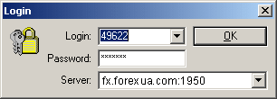

Авторизация
Авторизация, то есть
парольный доступ к счету, может быть произведена автоматически, в том
случае, если были сохранены личные данные. Если же личные данные не сохранялись,
то в начале сеанса работы с клиентским терминалом будет предложено
подключиться к тому счету, с которым вы закончили работать в предыдущем
сеансе.

Авторизация может быть также произведена из окна навигации из
контекстного меню группы "Счета" (Accounts).
Таким образом, вы сможете переключаться с одного счета на другой. Есть
возможность выбрать один из активных счетов (если необходимо).
Необходимо ввести текущий пароль, убедиться в правильности адреса
торгового сервера и нажать кнопку "OK.
Назад Содержание Далее